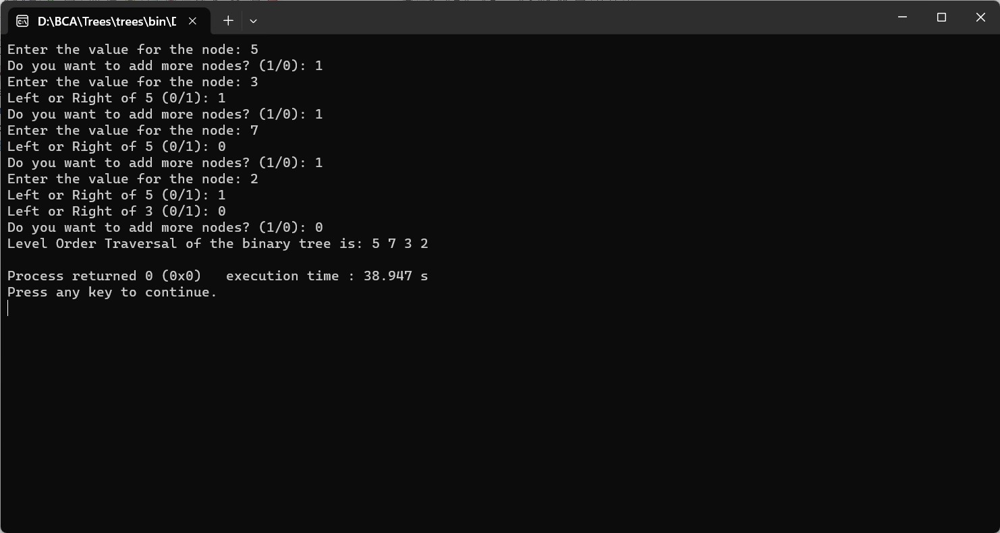

BINARY TREE LEVEL ORDER TRAVERSAL
#include
#include
//a structure for the binary tree node
struct Node {
int data;
struct Node* left;
struct Node* right;
};
// Function to create a new node
struct Node* createNode(int value) {
struct Node* newNode = (struct Node*)malloc(sizeof(struct Node));
newNode->data = value;
newNode->left = newNode->right = NULL;
return newNode;
}
// Function to perform level order traversal of a binary tree
void levelOrderTraversal(struct Node* root) {
if (root == NULL) {
return;
}
struct Node** queue = (struct Node**)malloc(sizeof(struct Node*));
int front = 0, rear = 0;
queue[rear] = root;
while (front <= rear) {
struct Node* currentNode = queue[front++];
printf("%d ", currentNode->data);
if (currentNode->left != NULL) {
queue = (struct Node**)realloc(queue, (rear + 2) * sizeof(struct Node*));
queue[++rear] = currentNode->left;
}
if (currentNode->right != NULL) {
queue = (struct Node**)realloc(queue, (rear + 2) * sizeof(struct Node*));
queue[++rear] = currentNode->right;
}
}
free(queue);
}
int main() {
int value, choice;
struct Node* root = NULL;
do {
printf("Enter the value for the node: ");
scanf("%d", &value);
if (root == NULL) {
root = createNode(value);
} else {
struct Node* temp = root;
while (1) {
printf("Left or Right of %d (0/1): ", temp->data);
scanf("%d", &choice);
if (choice == 0) {
if (temp->left == NULL) {
temp->left = createNode(value);
break;
} else {
temp = temp->left;
}
} else if (choice == 1) {
if (temp->right == NULL) {
temp->right = createNode(value);
break;
} else {
temp = temp->right;
}
} else {
printf("Invalid choice! Enter 0 or 1.\n");
}
}
}
printf("Do you want to add more nodes? (1/0): ");
scanf("%d", &choice);
} while (choice == 1);
printf("Level Order Traversal of the binary tree is: ");
levelOrderTraversal(root);
printf("\n");
return 0;
}
